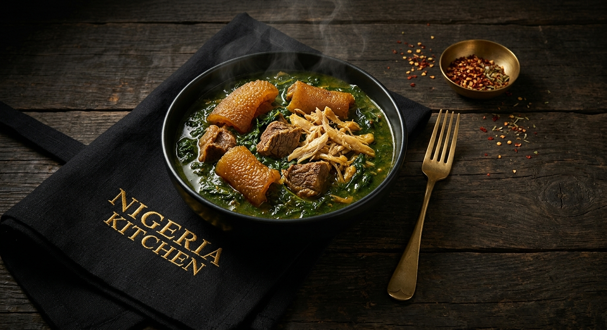

Bitterleaf Soup is a traditional Nigerian soup known for its distinctive flavour and rich consistency. It is enjoyed in different parts of Nigeria and can be prepared with a variety of ingredients.
What Is Bitterleaf Soup?
Bitterleaf Soup is prepared using bitterleaf as its main vegetable ingredient. The leaves are traditionally washed and processed to reduce their bitterness before being added to the soup.
Different households and communities have their own preferred methods of preparing this dish.
Ingredients
Below is a suggested list of ingredients. The exact quantities and recipe should be confirmed by the Nigerian Kitchen before publication.
- Washed bitterleaf
- Meat or preferred protein
- Stockfish
- Dry fish
- Red palm oil
- Ground crayfish
- Seasoning
- Salt
- Thickener, if required by the chosen recipe
- Water or meat stock
How to Prepare Bitterleaf Soup
Step 1: Prepare the Bitterleaf
Wash the bitterleaf thoroughly, following the preparation method appropriate for the type of bitterleaf being used.
Step 2: Prepare the Protein
Clean and season your chosen meat or protein. Cook until tender, reserving the stock for the soup.
Step 3: Prepare the Soup Base
Place the meat stock in a pot and add the ingredients required for your preferred bitterleaf soup recipe.
Step 4: Add the Bitterleaf
Add the prepared bitterleaf and stir carefully so that it combines evenly with the soup.
Step 5: Allow the Soup to Cook
Allow the ingredients to cook together until the soup reaches the desired consistency and flavour. Adjust seasoning as necessary.
Step 6: Serve
Serve hot with a suitable Nigerian swallow or another accompaniment of your choice.
What Can You Eat With Bitterleaf Soup?
Bitterleaf Soup is commonly enjoyed with Nigerian swallows such as fufu, eba, pounded yam and other preferred accompaniments.
Enjoy Traditional Nigerian Meals
Explore the Nigerian Kitchen menu and discover some of the meals available.
Explore Our Menu